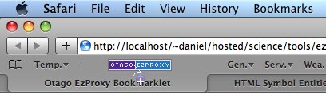

Designed to take the frustration out of getting to the "full text" version of journal articles that the University has a paid subscription to.
This bookmarklet will take you to the University of Otago EzProxy login page with your current location pre-appended to the EzProxy login script. Once you have logged in, you will be returned to the page that you were on when you first clicked the bookmarklet. This means that if the University has access to the article you are looking at (via the provider you happened to be viewing it with) then the "full text" options (including PDFs) should be available to you.
This bookmarklet was first developed in 2009. It has worked with almost no modification since then.
A bookmarklet is a small piece of JavaScript code stored as a URL within a bookmark. All you really need to know is that when you click it, stuff happens. This is it:
The exact procedure will vary according to the browser you are using.
In Safari (on the Mac) you can just "drag-n-drop" the bookmarklet to your "Bookmarks Bar" (press shift + ⌘ + B to show the bookmarks bar).

If you are using some other browser you might be able to right click and choose "Save As Bookmark", "Bookmark This Link" or something similar.
Any questions, comments or requests please feel free to contact me.
15/05/2010, Version 0.1
Initial attempt. Currently strips the ?CRETRY=1&SRETRY=0 that is appended by some (all?) Wiley InterScience pages if you arrive there via an RSS feed.
javascript:
var str=location.href;
location='https://ezproxy.otago.ac.nz/login?
url='+str.replace('?CRETRY=1&SRETRY=0','')
;